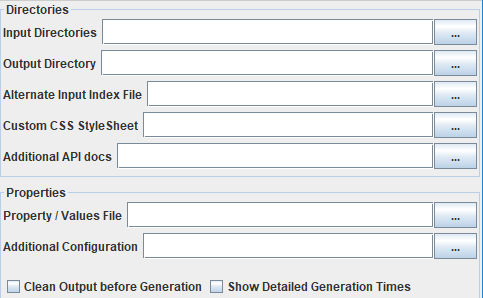
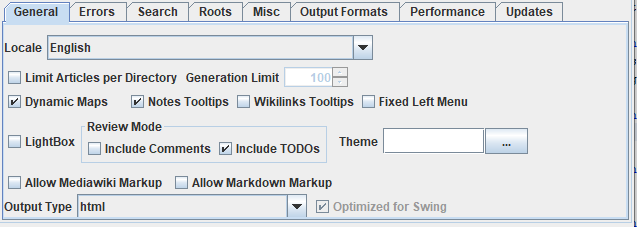
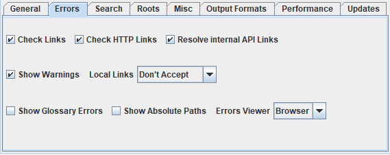
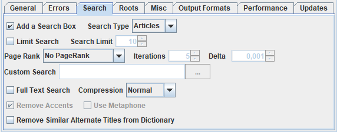
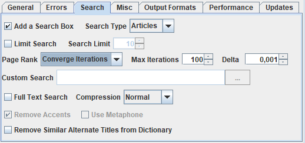
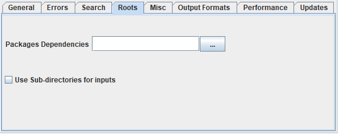
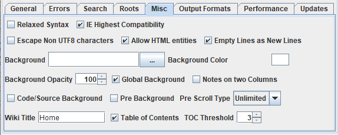
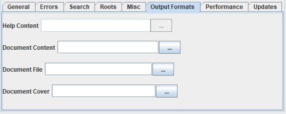
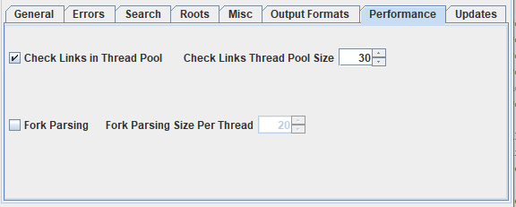
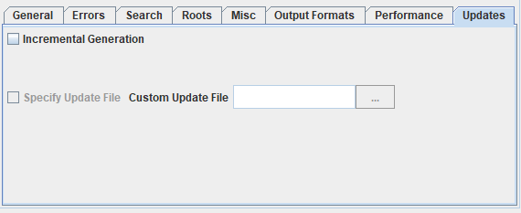

Home
Categories
Dictionary
Download
Project Details
Changes Log
What Links Here
How To
Syntax
FAQ
License
GUI Generation options
1 Global options
2 General options tab
2.1 Mediawiki and markdown markup
2.2 Output type
3 Errors tab
3.1 Checking links
3.2 Errors Viewer
4 Search options tab
4.1 PageRank options
5 Roots tab
6 Miscellanous options tab
6.1 Background
7 Output formats options tab
8 Performance options tab
9 Updates tab
10 Notes
11 See also
2 General options tab
2.1 Mediawiki and markdown markup
2.2 Output type
3 Errors tab
3.1 Checking links
3.2 Errors Viewer
4 Search options tab
4.1 PageRank options
5 Roots tab
6 Miscellanous options tab
6.1 Background
7 Output formats options tab
8 Performance options tab
9 Updates tab
10 Notes
11 See also
The GUI panel has several global options and several tabs for configuring the generation:
The two following properties are the only one which are mandatory to be able to generate the wiki[1]
All the other properties are optional:
The "Allow Mediawiki Markup" and "Allow Markdown Markup" espectively allow a subset of Mediawiki and markdown markups for the wiki source (in addition to XML files).
This combobox specifies how to view the files if errors are encountered:
The following options allow to set the PageRank algorithm for the Search:
The PageRank option can have the following values:
The following options allow to set a background under the pages of the wiki:
- General properties
- Errors: used to specify how parsing errors are handled
- Search: used for the search configuration
- Roots: used for root directories and packages configuration
- Misc: Miscellanous parameters
- Output formats: used to specify and configure the output formats of the generator
- Performance: used to tweak the performance of the generation
- Updates: used for the incremental generation mode
Global options
Main Article: Input and ouput arguments

The two following properties are the only one which are mandatory to be able to generate the wiki[1]
The "Apply" button will only be enabled if both these properties are specified
:- "Input Directories" : the input directories containing the wiki specification
- "Output Directory" : the output directory containing the generated wiki
All the other properties are optional:
- "Alternate Input Index File" : the alternate index File to use for the wiki. See index
- "Custom CSS StyleSheet" : a custom additional CSS StyleSheet that will be added to each article. See css
- "Additional API docs" : an optional file specifying the the custom internal API documentation.. See apidocs
- "Property / Values File" : an additional properties / values file. See user-defined properties
- "Additional Configuration" : the path to a configuration file
General options tab

- "Locale" : the localization of the wiki (the default is "en", which means that the wiki will be in English). See locale
- "Limit Articles per Directory" : specifies if there should be a limitation of the number of output articles per directory
- "Generation Limit" : specifies the maximum number of output articles per directory (if this is limited). See limit
- "Dynamic Maps": specifies if maps will be dynamically loaded
- "Notes Tooltips": specifies if notes show an integrated tooltip when hovering on the note associated element
- "Wikilinks Tooltips": specifies if wikipedia show an integrated tooltip when hovering on the note associated element
- "FixedLeftMenu": Specifies if the options in the left menu are always present. See default left menu for more information
- "Lightbox": specifies if images use lightboxes
- "Include TODOs": specifies if TODOs are included. See also TODO system
- "Include Comments": specifies if comments are included. See also Review system
- "Theme": specifies the theme of the wiki. See also StyleSheet theme
- "Allow Mediawiki Markup": specifies if Mediawiki markup files are allowed. See allowMediawiki
- "Allow Markdown Markup": specifies if Markdown markup files are allowed. See allowMarkdown. Note that both Mediawiki and Markdown markups can't be allowed at the same time
- "Output Type" : the type of the Wiki output. The default is html, but other formats (Help, Word, PDF, or ePub) can be allowed depending on the installed Plugins. See outputType
- "Optimized for Swing" : Only useful if the Output Type is "help". It specifies if the help content is optimized for the Swing API
Mediawiki and markdown markup
See also Mediawiki markup and Markdown markup
The "Allow Mediawiki Markup" and "Allow Markdown Markup" espectively allow a subset of Mediawiki and markdown markups for the wiki source (in addition to XML files).
Output type
By default the output will be an html static website. Depending on the included plugins, you will be able to select also:- Help format to produce a JavaHelp-like output
- Word
- ePub
Errors tab
Main Article: Errors viewer

- "Check Links": specifies that the presence of external links must be checked. See checkLinks
- "Check HTTP Links": specifies if the URL links with the "http" protocol are checked. See checkHTTPLinks
- "Local Links": specifies which kinds of local links outside of the wiki are allowed. See also checking local links
- "Resolve Internal API Links": specifies if APIs which are defined internal to the wiki output will be resolved. See resolveAPILinks
- "Show Warnings": specifies if the warnings should be presented (by default only errors are presented)
- "Show Glossary Errors": show the warnings in the glossary generation. See showGlossaryErrors
- "Show Absolute Paths": show the absolute paths rather than the relative path from the root directory for files where errors are encountered
- "Errors Viewer": specifies how to view the files if errors are encountered
- "Packages Dependencies": specifies the file which specifies the packages dependencies. See also packages for more information
Checking links
By default all links existence will be checked.Errors Viewer
Main Article: Errors viewer
This combobox specifies how to view the files if errors are encountered:
- "None" : the error files cannot be opened
- "Browser" : (default value) the platform browser will be used to open the error files
- "Editor" : a built-in editor will be used to open the error files
Search options tab
Main Article: Search box

- "Add a Search Box" : allow to add an autocomplete Search box which will be added for each article. See search
- "Search Type" : specifies which elements to include in the Search boxNote that if will only have an effect if there is a Search box. It can be on articles only, on articles and titles, on articles, titles and anchors, or it can be a custom Search
- "Limit Search" : set if there is a limit on the number of results for the Search
- "Search Limit" : set the limit on the number of results for the Search
- "PageRank": set if the PageRank algorithm is used to sort the results on the Search box, and how the iteration values are set
- "PageRank Iterations": set the number of iterations for the PageRank algorithm
- "PageRank Max Iterations": set the maximum number of iterations for the PageRank algorithm, when the iterations are using a convergence algorithm
- "PageRank Delta": set the value to stop the iterations when the iterations are using a convergence algorithm
- "Full Text Search" : specifies if the Search box will also have a full text search option. Note that if will only have an effect if there is a Search box. See fullTextSearch
- "Remove Accents": specifies if accents should be removed in the full text search. See fullTextSearchRemoveAccents
- "Use Metaphone": specifies if the Metaphone algorithm should be used in the full text search. See fullTextSearchMetaphone
- "Remove Similar Alternate Titles from Dictionary": if alternate titles are automatically pruned in the dictionary if their text is sufficiently similar to the article title. See pruneAltTitles for more information
PageRank options
Main Article: PageRank
The following options allow to set the PageRank algorithm for the Search:
- "PageRank": set if the PageRank algorithm is used to sort the results on the Search box, and how the iteration values are set
- "Iterations": set the number of iterations for the PageRank algorithm
- "Max Iterations": set the maximum number of iterations for the PageRank algorithm, when the iterations are using a convergence algorithm
- "Delta": set the value to stop the iterations when the iterations are using a convergence algorithm
The PageRank option can have the following values:
- "No PageRank": the PageRank algorithm is not used to sort the results
- "Fixed Iterations": the PageRank algorithm uses a fixed number of iterations, specified by the "Iterations" option
- "Converge Iterations": the PageRank algorithm is converging until the difference between the previous values and the new values is less than "Delta". The maximum value for the iterations is specified by the "Iterations" option

Roots tab
Main Article: Packages

- "Packages Dependencies": specifies the file which specifies the packages dependencies. See also packages for more information
- "Use sub-directories for inputs": specifies that the inputs sub-directories will be used rather that directly the inputs directory. See also Using the inputs sub-directories for more information
Miscellanous options tab

- "Relaxed Syntax" : specifies if the syntax of the articles is relaxed. See relaxedSyntax
- "IE Highest Compatibility" : specifies if the compatibility mode for Internet Explorer is set to the highest value. This may be necessary to allow jQuery to work correctly with high-level versions of IE (used for the Search field). See IECompatibilityEdge
- "Escape Non UTF8 Characters" : specifies if non UTF8 characters should be escaped in articles. See escapeNonUTF8
- "Empty Lines as New Lines" : specifies how empty lines in the source should be converted. See processing empty lines
- "Allow HTML Entities" : specifies if HTML entities are taken into account. See allowHTMLEntities
- "Background" : specifies the background file to use for the wiki, if there is one. See background
- "Background Color" : specifies the background color to use for the wiki, if there is one. See backgroundColor. Note that you can't have both a background file and a background color
- "Background Opacity" : specifies the background opacity. See backgroundOpacity
- "Global Background" : specifies if the background should be put on all pages. See backgroundGlobal
- "Notes on two Columns": specifies if the notes chapter presents the notes on two columns rather than one. See notesTwoColumns
- "Code/Source Background" : specifies if "code" and "source" elements must have a background. See codeHasBackground
- "Pre Background" : specifies if "pre" elements must have a background. See preHasBackground
- "Pre Scroll Type": specifies how the content of the "pre" element are scrolled. See preScrollingType
- "Wiki Title" : specifies the title of the wiki. See wikiTitle
- "Table of Contents" : specifies if there is a Table of content for each article in the wiki. See hasTOC
- "TOC Threshold" : specifies the threshold of the Table of content for each article in the wiki. See tocThreshold
Background
Main Article: Setting a background
The following options allow to set a background under the pages of the wiki:
- "Background" : specifies the background file to use for the wiki, if there is one
- "Background Color" : specifies the background color to use for the wiki, if there is one. Note that you can't have both a background file and a background color
- "Background Opacity" : specifies the background opacity
- "Global Background" : specifies if the background should be put on all pages
Output formats options tab
Main Article: OutputType configuration property

- "Help Content" : the file specifying the content for the help format. See helpContent
- "Document Content" : the file specifying the content for the document (Word, ePub, PDF) format. See wikiContent
- "Document File" : the file specifying the output document for the (Word, ePub, PDF) format. See docFile
- "Document Cover" : the file specifying the output document cover for the (Word, ePub, PDF) format. See cover
Performance options tab
Main Article: Performance

- "Check Links in Thread Pool" : specifies if the checking of HTTP Links is performed in a Thread pool. See checkHTTPLinksThreaded
- "Check Links Thread Pool Size" : the number of Threads to use to check HTTP Links. See checkHTTPLinksPool
- "Fork Parsing" : specifies of the parsing is performed in forked Threads. See forkParser
- "Fork Parsing Size per Thread" : specifies the number of articles to parse per each Thread. See forkParserSplit
Updates tab
Main Article: Incremental generation

- "Incremental Generation": check if the generator is in incremental generation mode (it will only parse and generate updated content)
- "Specify Update File" and "Custom Update File": used to specify the Incremental Generation file to use
Notes
- ^ The "Apply" button will only be enabled if both these properties are specified
See also
- GUI interface: This article is about the GUI interface of the application
×

Categories: General | Gui